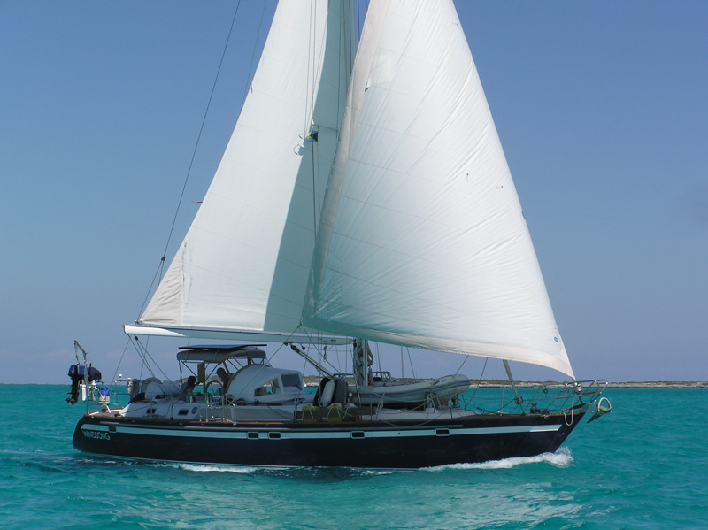

WINDSONG
A Magnificent Taswell 49
.

- Year 1989
- A Bill Dixon Custom Design
- Sales Price: US$ 329,000
- Located in Fort Lauderdale, Florida
- Hull Material: Fiberglass
- Engine/Fuel Type: Single Diesel
- YW# 1462-1944501
WINDSONG is a superb three stateroom, center cockpit sailing yacht in enviable condition, maintained by her owner in turnkey, fully equipped ocean ready cruising condition. She is a totally custom built blue water sailing yacht that can be easily handled from the cockpit and cruised by one couple. With a keel depth of 5.5 ft and a mast height of 63 ft WINDSONG easily navigates the ICW.
WINDSONG was a fresh-water boat for her first ten years. During their ten years the second owner sailed the U.S east coast and the Bahamas. The third and present owner lived aboard to experience the U.S. east coast and the entire Caribbean, often 2 or more times. She now looks to conquer the remainder of the world.
WINDSONG has been continuously upgraded, including virtually all mechanical, rigging and electronic systems. Qualified mechanics have diligently professionally performed under owner's close supversion all necessary and optional maintenance and upgrades. She has always been non-smoking and pet free.
Why Buy This Boat?
Taiwan's reknowned boat builder Ta Shing and famed British designer/architect Bill Dixon created a true blue water boat built with highest quality materials and workmanship. A quick inspection reveals its beauty: its teak interior, its spacious salon and cabins, its roomy heads with stall showers, its cedar lined lockers, its padded vinyl easily removable overhead liner. and its statin varnished thick teak and spruce cabin sole, to name just a few. Its thick solid hand layed fiberglass hull, sound insulated engine compartment, its through-bolted stainless steel backed deck hardware, in-mast wire conduits, among many other features, insure a safe, sturdy, easily maintainable boat in all conditions throughout the world.
The generously sized forward cabin has a full-width berth, upholstered
ultra-suede settee to starboard, mirrored vanity and storage cabinet,
roomy cedar-lined hanging locker, five spacious drawers and two storage
lockers. The cabin is well lit with two overhead dome lights and two brass
cabin lights; the cabin is also well ventilated with an large overhead
hatch, two ports and two dorade vents. Access to the chain locker is through
this cabin.
Proceeding aft and to port of the forward V-berth is the port guest cabin.
It features extra long upper and lower single berths, a generous
cedar-lined hanging locker, voluminous storage lockers under the lower berth, and
recessed bookshelves above the upper berth. A dressing table immediately forward of
the cabin door has a lifting top, a mirror above and three drawers
beneath. The cabin is lit with overhead dome and brass cabin lights and is unusually
well ventilated with an overhead hatch, a portlight and a dorade. Both berths have sturdy
stowable lee cloths.
Aft and to starboard of the forward V-berth is the guest head. It can be
entered directly from the forward cabin (for privacy) or from the
passageway that leads to the forward V-berth and separates the head from the guest cabin.
The head is boasts a separate shower stall that has a teak seat and teak
floor grate.
Ample storage is provided in three large storage cabinets and a sliding
three panel
vanity behind the sink. The large counter-top supports a sunken mirror-finish stainless steel
sink and is edged with a teak fiddle. On the forward wall is a large mirror. The
Raritan toilet has a dedicated 30-gallon holding tank. An overhead hatch, a port and a
dorade vent provide ventilation.
Aft of the guest cabin and head Windsong boasts its luxurious main salon.
Outfitted the finest teak with exceptional craftmanship,
it is incrediably spacious, airy, and bright.
Two large overhead hatches, four fixed hull portlights and four long fixed
trunk cabin windows provide natural light, while four dome LED lights
and four brass brass cabin lights supply evening illumination. The companionway
has a clear Plexiglas sliding hatch that allows additional light to enter
the salon. To port is a large oval-shaped bolstered settee upholstered in
luxurious fabric that surrounds a formal hi-lo oval teak table (comfortably
seats eight for dinner). This large table can be removed (it has its own
custom-built storage locker) to reveal a small coffee table that
can be lowered for informal gatherings, cocktails or coffee. On
the starboard side, two teak and upholstered swivel captain's chairs sit either
side of a curved teak pedestal. When inverted, the pedestal's cover provides
a secure setting for drinks. Storage inside the pedestal is outfitted for wines and liquors. Two
forward outboard cabinets hide stereo speakers and provide storage. WINDSONG also has a handsome
curved teak mast cover that conceals the keel-stepped mast. The companionway can be alternatively
closed using three solid teak boards or two screened teak boards. All boards are storable in a
custom-designed compartment under the steps.
A seagoing, U-shaped galley is located starboard and aft of the companionway stair and free from any traffic. Teak louvered cabinets are found above the counters. While under the counters there are a large two-shelved circular cabinet, eight drawers, a deep under counter pot and pan bin, a below stove cabinet for large cooking utensils and a hidden stow-away garbage bin.
The Frigoboat DC keel cooled refrigerator and freezer provides 24 hour noise free operation. Both refrigerator and freezer have their own dedicated compressors, keel coolers and digital controls allowing each to assume the duties of the other and thus provide redundant refrigeration and freezing. The refrigerator has both top and front loading doors.
There are deep stainless steel double sinks with hot and cold pressure water, a microwave oven, a Sea Ward 3-burner electric stove with oven and broiler, teak towel dispenser, dual teak spice racks, and fresh and salt water foot pumps. A deck prism and LED mounted above the stove, four undercounter LED's, and a ceiling dome LED provide illumination.
Proceeding aft past the navigation station you enter owner's stateroom. It is large and airy.
There is a comfortable centerline island queen-sized berth. Two
ports on the transom furnish continuous air circulation throughout the vessel. Two curved
ultra-suede settees are positioned on either side of the berth. On the forward wall a dressing
table with an opening table top, a teak trimmed mirror above and swing-out vanity stool
below are found. In addition to a large overhead hatch, three additional portlights and two dorade
ventilate the cabin. Lighting includes four brass cabin lights, a large
fluorescent light and three overhead LED dome lights. Storage space is extremely
generous in this cabin featuring almost 6 feet of cedar-lined hanging lockers, a
Formica-lined wet gear locker, and four large drawers (one with security lock). Two in-wall storage lockers
plus ample storage under the settees complete the picture.
The en-suite owner's head features a separate
shower stall with a clear Plexiglas door and teak grate. A built-in
automatic dryer is
mounted outboard of the shower behind a waterproof vinyl cover. There are
also large
storage compartments and a roomy linen closet. The counter-top is edged
with a teak
fiddle
and has an sunken mirror-finished stainless steel sink. Above, a
teak-framed mirror
hides a medicine cabinet. The Raritan head has a separate 30-gallon
holding tank. Two
portlights ventilate and illuminate the head; two dome lights and a two LED's provide
evening light.
The generator room access doors are located in the passageway leading to
the aft cabin
giving virtually 360 access to the 8kw Onan MDKD generator. The
generator has run
less than 2500 hours. A sound-damping hush box surrounds the
generator. Like the
entire vessel the generator has had constant care. All equipment is bonded
to ship's
copper plate grounding system plus grounding line from mast to engine
block.
400 watt hours of solar panels provide additional power to the 8 100 amp hour AGM house batteries and one group 8D AGM engine battery (all new 2015).
Another source of energy is the Magna 2800 watt inverter charge that has a remote control and gauge at the navigation station.
Mounted on the cockpit coming are two electric variable speed Andersen 62 ST mainsheet winches, two electric variable speed Andersen 40 ST jib sheet winches, and an Andersen low profile traveler winch. Mast mounted are a Lewmar 43 STC main halyard winch, a Lewmar 40 STC genoa halyard winch, and a Lewmar 30 STC Staysail halyard winch. The main sail has in mast roller furling that either of the starboard Andersen electric winches can furl. Both jibs have new 2014 Schaffer stainless steel roller furlers. All standing rigging is new 2014. Spare halyards include one main and two spinnaker halyards. Included are a well maintained 130 genoa, a 100 jib, a in-mast roller furling main, and a large gennaker with sock.
A Yanmar 77 hp turbo diesel model 4JH-DTE, with less than 5200 running hours, has been expertly maintained and looks like new. Recent upgrades include a new turbocharger in 2014 and new starter in 2003. The engine is easily serviced through six removable engine access doors located in the passageway from the salon to the aft cabin and in the rear head. The engine compartment is well insulated to control noise.
A 14 gallon per hour Spectra Cape Horn watermaker is split between the engine compartment and underneath the banquet in the main salon. An Atwood 10.5 gallon water heater, 110 volt & engine driven provides hot water throughout the vessel, including to the transom shower.
There also are three CruisAir self contained reverse cycle air conditioners, a 12,000 BTU unit in the main salon, one 8,000 BTU unit that cools the two forward cabins, and one 8,000 BTU in the aft owner’s cabin. Each unit has it own digitally controlled thermostat to cool, dehumidify, or heat. The mechanicals furthermore include a three blade feathering Max Pro propeller and Maxwell vertical windlass VWC-3500.
Bill Dixon designed Windsong with low-profile line, extended sugar-scoop transom, Awlgripped blue hull with white accent stripes, teak decks, and meticulously varnished teak toe-rail. With her 15 foot; wide beam, deep forefoot and short overhangs, she has all the below-deck room on would want in a yacht of this size.
Two coats of Petit epoxy barrier coat and two coats of hard Transocean blue paint were applied to the bottom. The hull is insulated with P/U foam insulation in the living areas. Teak rub rails with stainless steel strake plates protect the hull.
The hull also includes S/S stanchions with double lifelines, six S/S cowl vents mounted on fiberglass dorade boxes, six S/S mooring cleats and teak grab rails. Roomy lazarettes at the aft corners furnish additional storage for line, spare anchors, fenders, hoses, electrical cords, etc.
The cockpit includes a custom pedestal with a 32 inch diameter teak trimmed steering wheel. A custom removable legless teak table provides a comfortable cockpit dining area and stows securely against the pedestal. Custom vinyl covered cushions that are removable affixed comfort the cockpit benches.
Most importantly the cockpit floor is covered with easily removable teak cockpit grates to help insure that sand and dirt does not reach Windsong's interior. Two cockpit speakers provide music from the stereo at the navigation station.
A stainless steel Garhauer motor hoist at the transom provides easily removability of the outboard from the dinghy and mounting on the rail mounted teak motor mounts.
Deck canvas (color toast) includes a bimini under the solar panels, a connector with strata-glass between the hard dodger and bimini, cockpit side panels with strata-glass, sunbrella cockpit sunshades, wheel/pedestal cover, deck hatch covers, and toe rail covers.
The cockpit also has a full complement of navigation equipment. A Garmen 7612 chart plotter, two Garmin digital displays, a Garmin autopilot display and control, Garmin wireless autopilot remote control, Lewmar wireless anchor windlass/bow thruster remote control, and Garmin remote wireless VHF handset, are all mounted in the cockpit.
A stainless steel folding ladder that stows against the rear transom bulkhead lowers to provide access from the swim platform into the water. The swim platform additionally has a stowable shower head and hose that provides both hot and cold water. A second folding stainless ladder stows against the lifelines and removably mounts amidships to either of the vessel’s sides to provide easy access to either a dinghy or the water. The transom ladder provides the advantage of transom steps, yet keeps the vessel's length under 50 feet, permitting lower dockage costs and easier maneuverability.
Windsong has a full complement of safety equipment. Included among these are DSB Deutshce Schlauchboot GmbH 6 man life raft in a rigid container, a Switlik MOB-8A man overboard inflatable module, 2 ACR 496 EPIRBS, 2 Res-Q-Link personal locator beacons, six fire extinguishers, 7 life jackets, 2 jack lines, 2 safety harnesses, and a emergency life sling. A Harken bosun's chair and an ATN mast climber round out the emergency equipment. (Some equipment may require recertification which appears not to be readily available in Mexico).
CONTACT OWNER

Contact the owner:
Jim Jacobs
jim@jacobshome.com
+1 954 706 9175